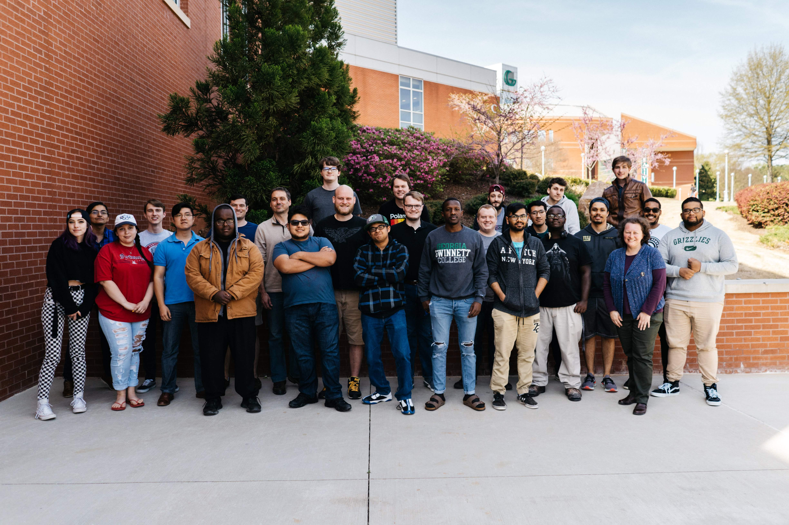

Admin Login
Welcome to
Software Development
at Georgia Gwinnett College

The class of Spring 2019 Software Development section 1 would like to welcome you to Georgia Gwinnett College's official website for all things
Software Dev! This is a website built for Software Development students by Software Development students. Through this website, you will be able
to find not only essentials for the class such as class announcements, past projects, and useful resources, but also helpful information for
students inquiring about the course, such as a FAQ, a summary of GGC's Software Dev teachers, and even feedback from past students.